Assignment Three: Anscombe
This week, we were asked to run the Anscombe R file found on our class github account. Here are the regression models we were assigned to run:
Data Summary:
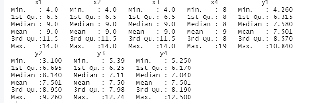
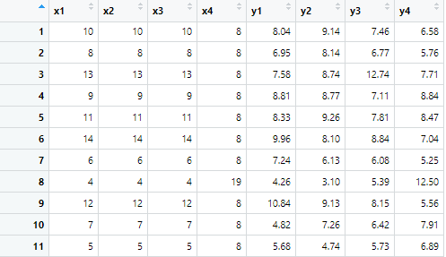
Simple Summary:
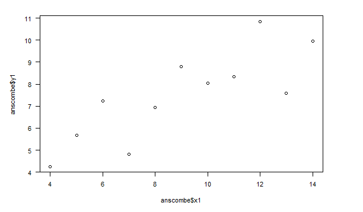
Create Four Model Objects:
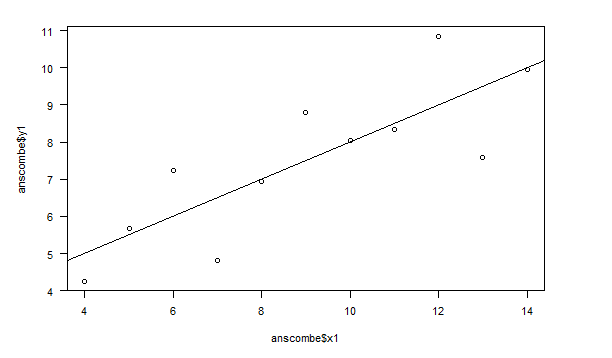
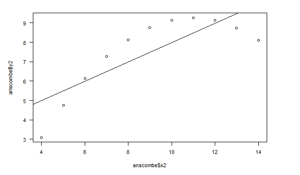
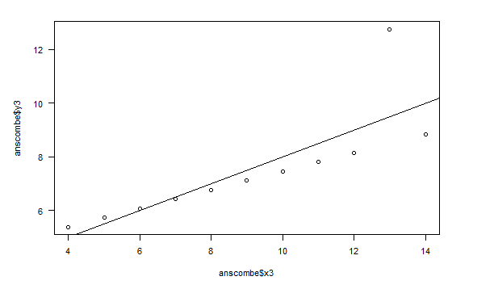
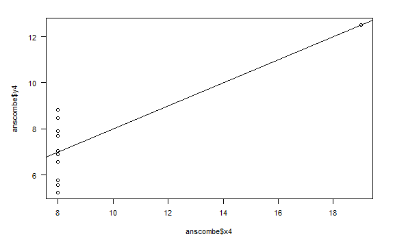
Fancy Version (per help file):
Plot Using For Loop:
.png)
.png)
Preparing for the Plots:
I added the following to the R file:
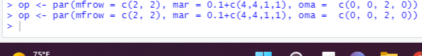
Plot Charts Using for Loop:
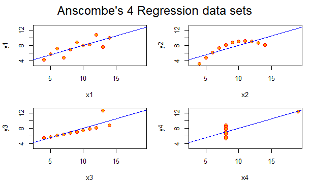
Comparing the Regression Models
The first regression data set is a high degree of positive correlation. It is a positive linear scatter-plot graph. This, in the next graph, turns into a curvi-linear scatter-plot graph that begins on a positive incline but turns into a negative one as the curve progresses. The third regression model turns into an almost perfect positive correlation linear line, and the last graph turns into a graph that has no correlation at all.
Comparing Different Ways to Create the Plots
Color
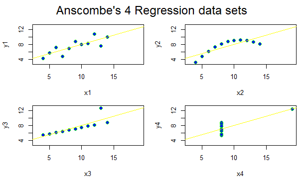
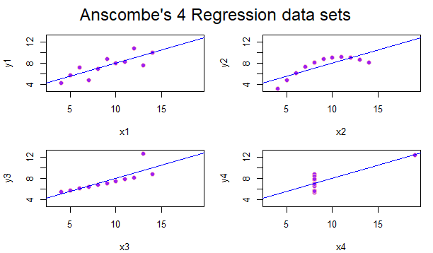
You can change the data sets by color by editing the “col” function! Using too many colors, however, may be distracting and hard to follow for those seeking to easily follow the data provided.
Line Types
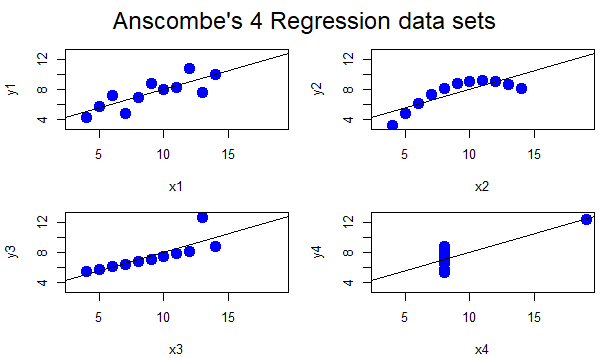
You can change the line type by using the “lty” function.
Plot Characters

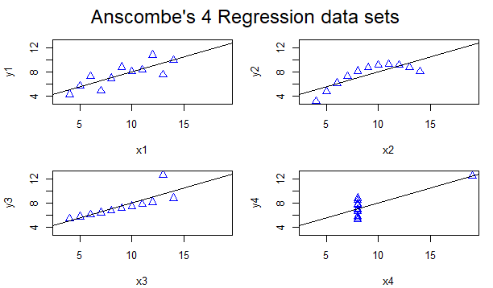
You can edit the plot characters by using the “cex” and the “pch” function! The plotting characters above are triangles by inputting pch=2.
Can You Fine-tune the charts without using other packages?
Yes, you can. As you can see above, the regression models can be edited by color, font, plot character shape, line width, and others. The possibilities are truly endless, and the choices become larger when there are added packages. On our last assignment, Murrell, the data imported from Happy Planet Index could be edited with several functions including par, axis, mtext, etc. all without adding any other package.
How about with GGPlot2?
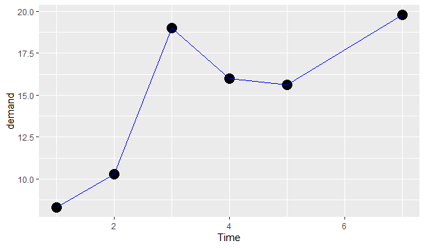
Yes you can! You can change ggplots easily. This is the coding I used for the following example!
.png)